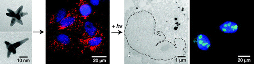
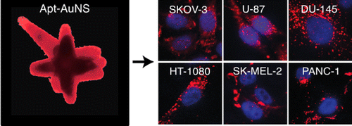
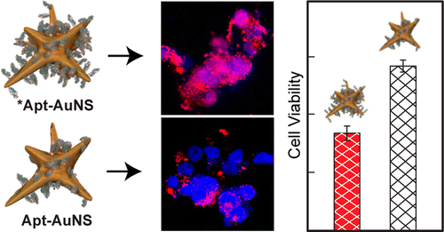
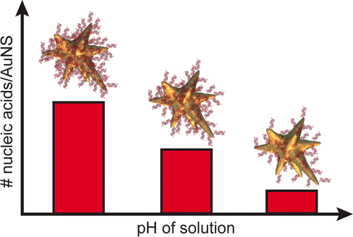
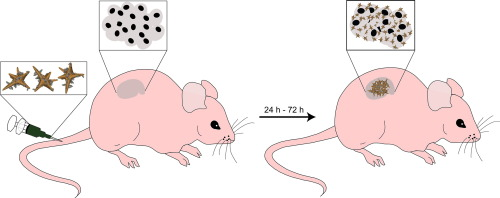
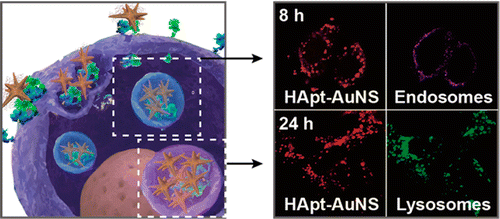
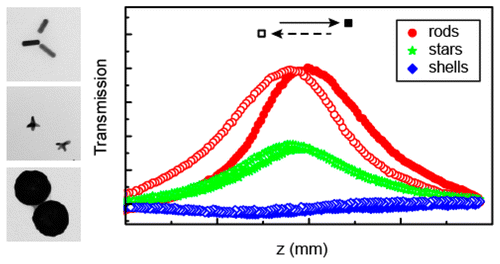
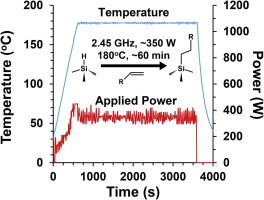

Scientific Publications
Google Scholar-
D.H.M. Dam, J.H. Lee, P.N. Sisco, D.T. Co, M. Zhang, M.R. Wasielewski, and T.W. Odom, ACS Nano 6, 3318-3326 (2012). "Direct Observation of Nanoparticle-Cancer Cell Nucleus Interactions.” doi: 10.1021/nn300296p

-
D.H.M. Dam, K.S.B. Culver, P.N. Sisco, and T.W. Odom, Therapeutic Delivery 3, 1263-1267 (2012). "Research Spotlight: Shining light on nuclear-targeted therapy using gold nanostar constructs.” doi: 10.4155/tde.12.107

-
D.H.M. Dam, K.S.B. Culver and T.W. Odom, Molecular Pharmaceutics 11, 580–587 (2014). “Grafting aptamer onto gold nanostars increases in vitro efficacy in wide range of cancer cell types.” doi: 10.1021/mp400565

-
D.H.M. Dam, R.C. Lee and T.W. Odom, Nano Letter 14, 2843-2848 (2014). “Improved in vitro Efficacy of Gold Nanoconstructs by Increased Loading of G-quadruplex Aptamer” doi: 10.1021/nl500844m

-
D.H.M. Dam, H. Lee, R.C. Lee, K.H. Kim, N.L. Kelleher and T.W. Odom, Bioconjugate Chemistry 26, 279-285 (2015). “Tunable loading of oligonucleotides with secondary structure on gold nanoparticles through a pH-driven method” doi: 10.1021/bc500562s

-
D.H.M. Dam, K.S.B. Culver, I. Kendela, R.C. Lee, K. Chandra. H. Lee, C. Mantis, A. Ugolkov, A.P. Mazar, and T.W. Odom, Nanomedicine: Nanotechnology, Biology and Medicine 11, 671-679 (2015). “Biodistribution and in vivo toxicity of aptamer-loaded gold nanostars” doi: 10.1016/j.nano.2014.10.005

-
H.Lee, D.H.M. Dam, J.W. Ha, J. Yue, and T.W. Odom, ACS Nano 9, 9859-9867 (2015). “Enhanced human epidermal growth factor receptor 2 degradation in breast cancer cells by lysosome-targeting gold nanoconstructs” doi: 10.1021/acsnano.5b05138

-
Y. Hua, K. Chandra, D.H.M. Dam, G.P. Wiederrecht, and T.W. Odom, The Journal of Physical Chemistry Letters 6, 4904-4908 (2015). “Shape-dependent nonlinear optical properties of anisotropic gold nanoparticles.” doi: 10.1021/acs.jpclett.5b02263

-
J.C. Small, D.H.M. Dam, J.L. Siegel, A.T. Crepinsek, T.A. Neal, A.A. Althoff, N.S. Line, and L.A. Porter Jr, Polyhedron 114, 225-231 (2016). “Alkyl-functionalization of porous silicon via multimode microwave-assisted hydrosilylation.” doi: 10.1016/j.poly.2015.12.0303

-
D.H.M. Dam, X.Q. Wang, S. Lee, D. Shipp, M. Vijay, Y. Joo, and A.S. Paller, Journal of Investigative Dermatology 137, 440-448 (2017) “Ganglioside GM3 mediates glucose- induced suppression of IGF-1 receptor-Rac1 activation to inhibit keratinocyte motility” doi: 10.1016/j.jid.2016.09.028

-
D.H.M. Dam, S.A. Jelsma, and A.S. Paller, Wound Healing: Stem Cells Repair and Restorations, Basic and Clinical Aspects 167 (2017) “Impaired Wound Healing in Diabetic Ulcers: Accelerated Healing Through Depletion of Ganglioside” Hardback: 9781119282488
-
D.H.M. Dam, and A.S. Paller, Progress in molecular biology and translational science (2018) “Gangliosides in Diabetic Wound Healing” doi: 10.1016/bs.pmbts.2017.12.006